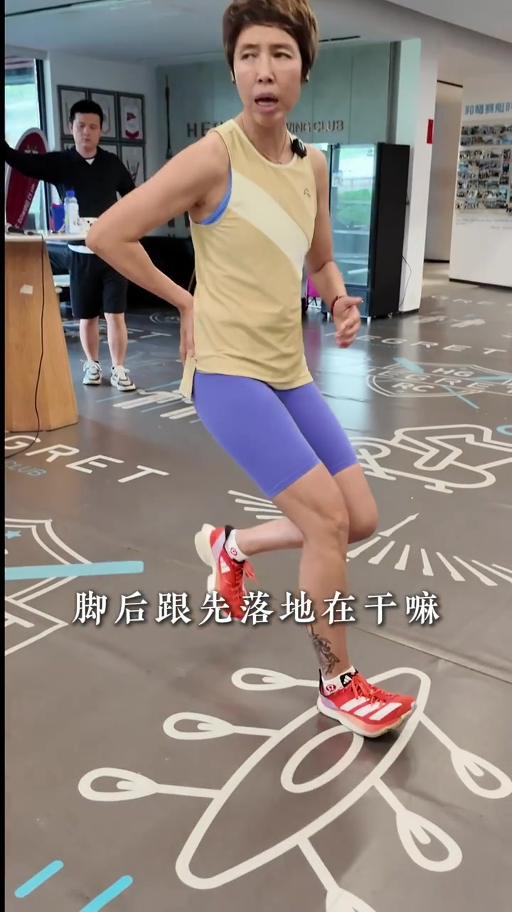
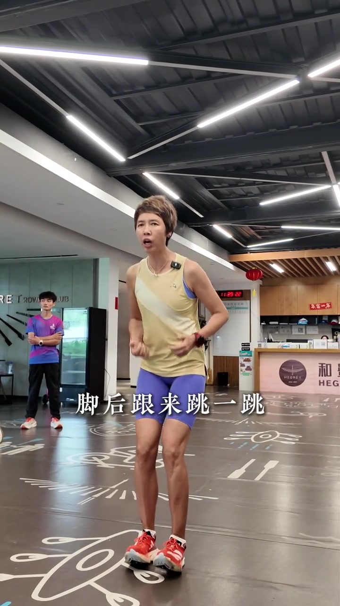
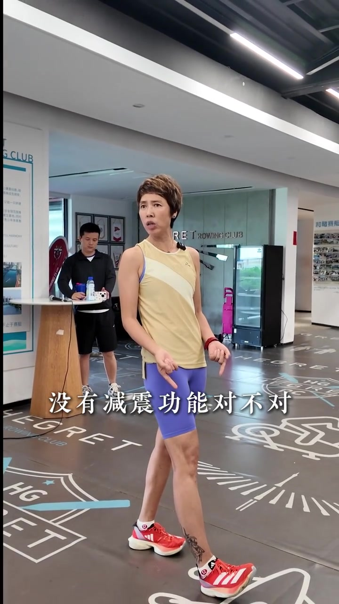
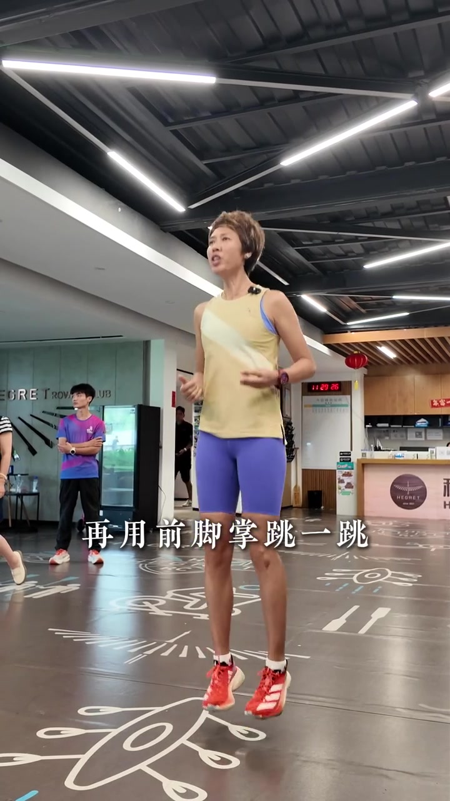
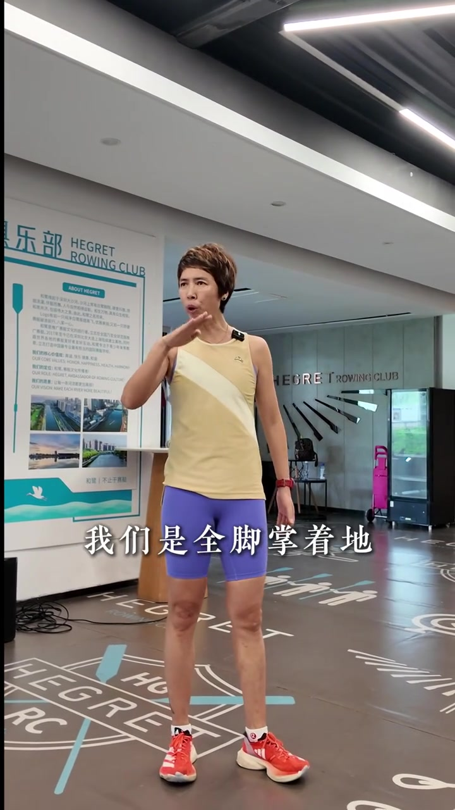
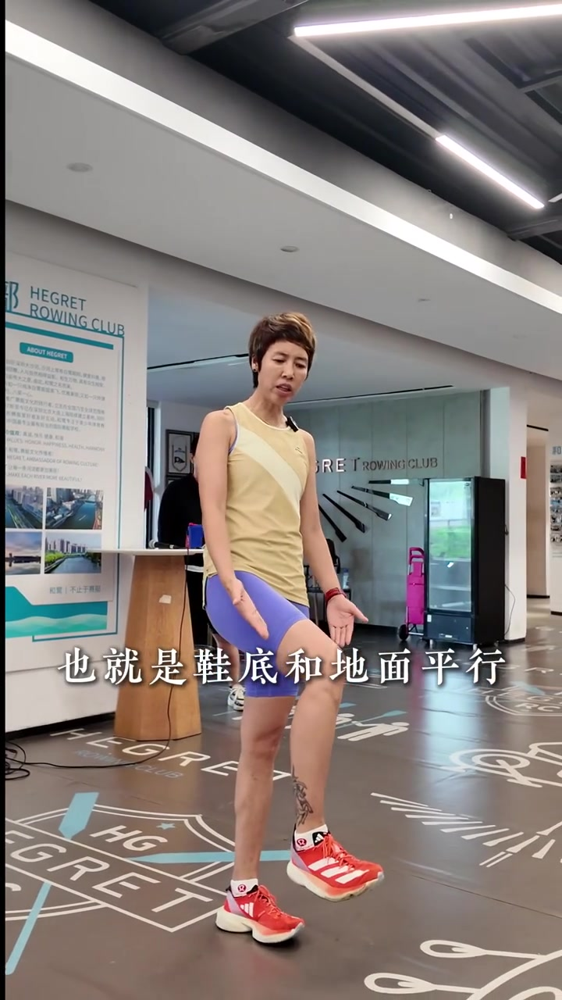
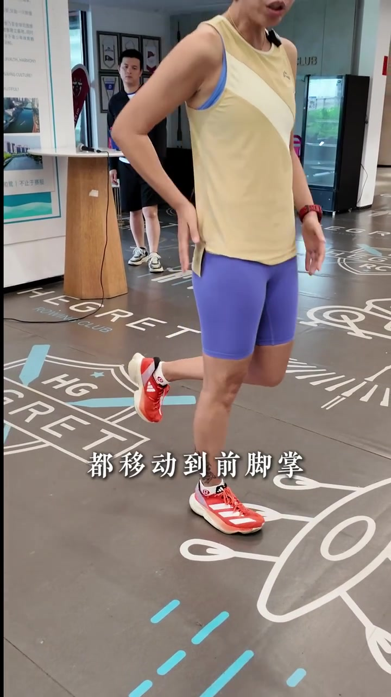
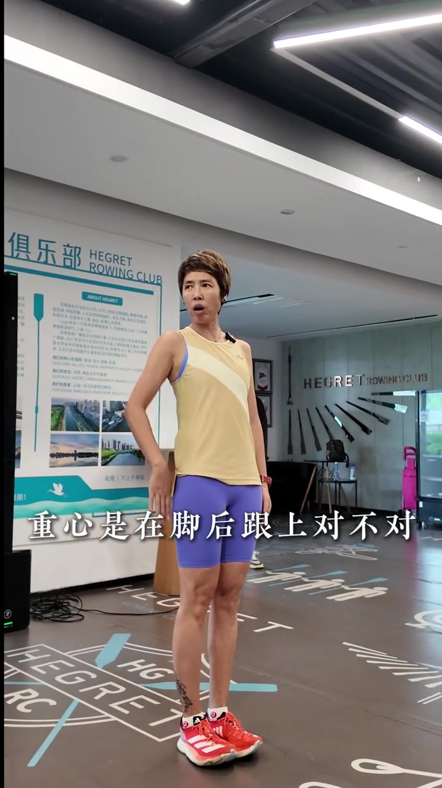

脚后跟先落地就是刹车
教练在赛艇俱乐部大厅开场，右脚脚跟点地、前脚掌抬起，做出夸张的脚跟落地姿态。字幕直接质问：「脚后跟先落地在干嘛」——答案是刹车；每跑一步再刹车一次。
「脚后跟先落地在干嘛？刹车，每跑一步再刹车。」
说明：Whisper 保留原识别；叙述结合画面字幕校正（「入地的干嘛」→落地在干嘛、「没跑一步」→每跑一步、「胡在脚后跟上」→糊在脚后跟上）。话题标签含全脚掌落地、郑辉跑步学院。

脚跟跳没有减震，前脚掌跳才有弹性
先用脚后跟原地跳一跳：落地硬、没有减震、也没有弹性。再换前脚掌跳，让学员直接对比体感。画面字幕从「脚后跟来跳一跳」「没有减震功能对不对」切到「再用前脚掌跳一跳」。
「我们首先用我们的这个脚后跟来跳一跳……没有减震功能对不对……没有弹性。咱用前脚掌跳一跳，什么感受？」



不是脚跟或前掌二选一，而是全脚掌着地
学员常问教练：到底脚跟先着地、前脚掌着地，还是哪里先着地？答案不是二选一——「我们是全脚掌着地」，强调「全部的全」「整个脚掌着地」。可操作标准：鞋底和地面平行，小腿垂直地面，才有可能做到全脚掌落地。
「教练到底是脚后跟先着地、前脚掌着地还是哪里先着地？我们是全脚掌着地……也就是鞋底和地面平行，小腿垂直地面，才有可能做到全脚掌落地。」


落地一瞬间，体重移到前脚掌做支撑
全脚掌落地还不够：落地的一瞬间，要把身体体重都移动到前脚掌做支撑，而不是糊在脚后跟上。她单脚站立、手点髋臀区，强调支撑点前移。
「落地的一瞬间，把我们身体的体重都移动到前脚掌做支撑，糊在脚后跟上……」

站直重心在脚跟，向前时落在有效支撑点
她用站立对照收束：站直时重心在脚后跟上；向前移动时重心在前脚掌上。因此落的每一步，都要落到有效的支撑点——听懂了吗？
「我们这样站直的时候，重心是在脚后跟上对不对？那么我们向前移动的时候在前脚掌上。落的每一步，都要落到有效的支撑点。听懂了吗？」
